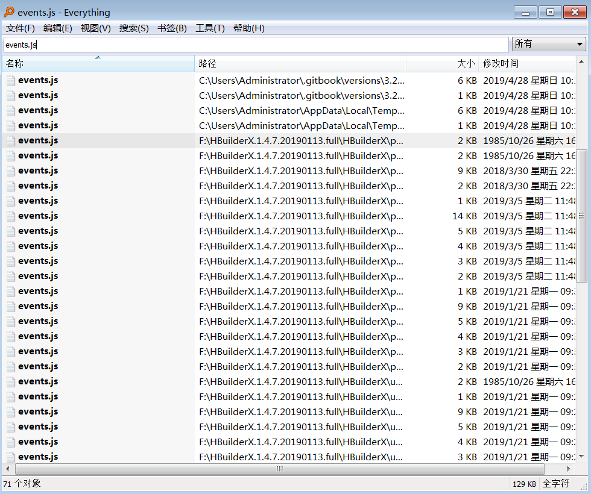
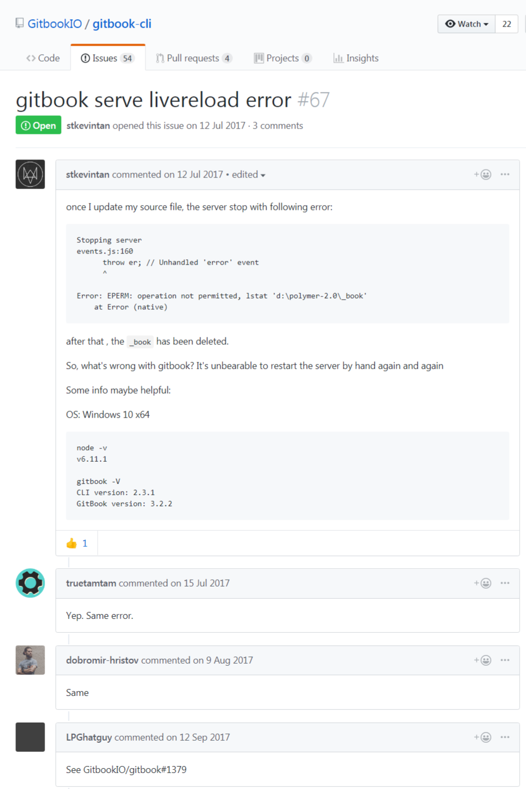
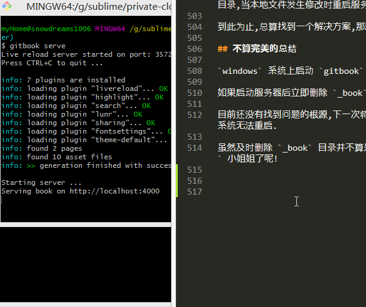

1. 热加载失败治标之法
1.1. 破镜如何贴花黄
gitbook在Windows系统无法热加载,总是报错!
gitbook 是一款文档编写利器,可以方便地 markdown 输出成美观优雅的 html ,gitbook serve 启动服务器后,原来相貌平平的 markdown 丑小鸭摇身一变就成了倾国倾城的 html 绝色佳人.
如果源文件发生更改,Windows 却无法按照预期那样重启服务器,直接抛出一个异常,立即终止了 markdown 的化妆.
Restart after change in file README.md
Stopping server
events.js:183
throw er; // Unhandled 'error' event
^
Error: EPERM: operation not permitted, lstat 'F:\workspace\private-cloud-backup\gitbook-test\_book'
1.1.1. 对镜贴花黄
现在看一下 markdown 灰姑娘变身 html 小姐姐的神奇过程吧!
$ gitbook serve --log=debug
Live reload server started on port: 35729
Press CTRL+C to quit ...
debug: readme found at README.md
debug: summary file found at SUMMARY.md
debug: cleanup folder "G:\sublime\gitbook-test\_book"
info: 7 plugins are installed
info: loading plugin "livereload"... OK
...
info: loading plugin "theme-default"... OK
info: found 1 pages
info: found 0 asset files
debug: calling hook "config"
debug: calling hook "init"
debug: copy assets from theme C:\Users\snowdreams1006\.gitbook\versions\3.2.3\node_modules\gitbook-plugin-theme-default\_assets\website
...
debug: copy resources from plugin C:\Users\snowdreams1006\.gitbook\versions\3.2.3\node_modules\gitbook-plugin-livereload\book
debug: generate page "README.md"
debug: calling hook "page:before"
debug: calling hook "page"
debug: index page README.md
debug: calling hook "finish:before"
debug: calling hook "finish"
debug: write search index
info: >> generation finished with success in 1.5s !
Starting server ...
Serving book on http://localhost:4000
根据上述输出日志,我们可以分析出 gitbook 的基本运行流程.
- 加载
readme和summary文件,若存在glossary文件也会加载,并删除_book目录
debug: readme found at README.md
debug: summary file found at SUMMARY.md
debug: cleanup folder "G:\sublime\gitbook-test\_book"
- 加载依赖插件,若没有找到相应插件会报错,提示运行
gitbook install安装插件.
info: 7 plugins are installed
info: loading plugin "livereload"... OK
info: loading plugin "highlight"... OK
info: loading plugin "search"... OK
info: loading plugin "lunr"... OK
info: loading plugin "sharing"... OK
info: loading plugin "fontsettings"... OK
info: loading plugin "theme-default"... OK
- 扫描页面和静态资源文件
info: found 1 pages
info: found 0 asset files
- 读取配置文件并初始化
debug: calling hook "config"
debug: calling hook "init"
- 拷贝样式资源和插件资源
debug: copy assets from theme C:\Users\snowdreams1006\.gitbook\versions\3.2.3\node_modules\gitbook-plugin-theme-default\_assets\website
debug: copy resources from plugin C:\Users\snowdreams1006\.gitbook\versions\3.2.3\node_modules\gitbook-plugin-fontsettings\assets
debug: copy resources from plugin C:\Users\snowdreams1006\.gitbook\versions\3.2.3\node_modules\gitbook-plugin-sharing\assets
debug: copy resources from plugin C:\Users\snowdreams1006\.gitbook\versions\3.2.3\node_modules\gitbook-plugin-lunr\assets
debug: copy resources from plugin C:\Users\snowdreams1006\.gitbook\versions\3.2.3\node_modules\gitbook-plugin-search\assets
debug: copy resources from plugin C:\Users\snowdreams1006\.gitbook\versions\3.2.3\node_modules\gitbook-plugin-highlight\css
debug: copy resources from plugin C:\Users\snowdreams1006\.gitbook\versions\3.2.3\node_modules\gitbook-plugin-livereload\book
- 开始生成单独页面,依次执行
page:before,page回调函数,全部页面执行完毕后执行finish:before和finish回调函数.
debug: generate page "README.md"
debug: calling hook "page:before"
debug: calling hook "page"
debug: index page README.md
debug: calling hook "finish:before"
debug: calling hook "finish"
- 生成搜索文件
debug: write search index
- 启动完毕,输出成功信息
Starting server ...
Serving book on http://localhost:4000
默认情况下服务器启动后会占用两个端口,一个是对外暴露的 4000 端口,用于浏览器访问项目.
另外一个是 35729 端口,用于监听本地文件变化,重启服务器进而实现热加载功能.
本地服务器启动后我们就可以访问 http://localhost:4000 预览静态网站效果,markdown 源文件华丽演变成 html 富文本文件.
1.1.2. 破镜怎化妆
不幸的是,Windows 热加载可能会有问题,也就是说如果启动服务器后,本地文件发生改变,此时会触发热加载功能而报错 Error: EPERM: operation not permitted ,这样一来浏览器又无法访问了.
刚刚变身的 markdown 瞬间又被打回原形,无法欣赏化妆后的容颜了,这样的体验相当不好!
边化妆边照镜子才是做到心中有谱,随时调整,如果不照镜子而直接化妆,那不是一般人能做到的.
gitbook 启动本地服务器给我们提供了镜子,但热加载失败又把镜子摔碎了,还怎么愉快的化妆?
Restart after change in file README.md
Stopping server
debug: readme found at README.md
debug: summary file found at SUMMARY.md
debug: cleanup folder "G:\sublime\gitbook-test\_book"
events.js:174
throw er; // Unhandled 'error' event
^
Error: EPERM: operation not permitted, lstat 'G:\sublime\gitbook-test\_book'
Emitted 'error' event at:
at FSWatcher._handleError (C:\Users\snowdreams1006\.gitbook\versions\3.2.3\node_modules\chokidar\index.js:236:10)
at ReaddirpReadable.emit (events.js:189:13)
at Immediate.<anonymous> (C:\Users\snowdreams1006\.gitbook\versions\3.2.3\node_modules\chokidar\node_modules\readdirp\stream-api.js:82:32)
at runCallback (timers.js:705:18)
at tryOnImmediate (timers.js:676:5)
at processImmediate (timers.js:658:5)
1.2. 寻医问诊修破镜
现在问题已经复现,接下来就要开始寻医问诊,试图让破镜重圆,好让 markdown 灰姑娘变成人见人爱的 html 小姐姐.
根据报错信息描述,定位到删除 _book 目录再次创建该目录时,提示 EPERM: operation not permitted ,即无权操作.
1.2.1. 柯南附体
既然说是操作权限的问题,那我们看一下 _book 目录现在是怎样状态吧!
$ ls
gitbook-errorforwindows-preview.png README.md SUMMARY.md
当前项目已经没有 _book 目录,证明发生报错时确实已经删除了 _book 目录,但是某种原因无权再次创建该文件夹而重启失败.
然而,这只是表现现象,老师告诉我们,要透过现象看本质,即使现在没有 _book 文件再次启动服务器还是会启动成功并创建 _book 文件的,所以真想只有一个!
那就是,gitbook 控制台在说谎!
虽然排除了 gitbook 无权创建 _book 目录的嫌疑,那又怎么解释重启服务器却没能创建 _book目录这件事呢?
debug: cleanup folder "G:\sublime\gitbook-test\_book"
events.js:174
throw er; // Unhandled 'error' event
^
Error: EPERM: operation not permitted, lstat 'G:\sublime\gitbook-test\_book'
Emitted 'error' event at:
at FSWatcher._handleError (C:\Users\snowdreams1006\.gitbook\versions\3.2.3\node_modules\chokidar\index.js:236:10)
at ReaddirpReadable.emit (events.js:189:13)
at Immediate.<anonymous> (C:\Users\snowdreams1006\.gitbook\versions\3.2.3\node_modules\chokidar\node_modules\readdirp\stream-api.js:82:32)
at runCallback (timers.js:705:18)
at tryOnImmediate (timers.js:676:5)
at processImmediate (timers.js:658:5)
先看一下 FSWatcher._handleError 异常信息: sed -n "223,239p" ~/.gitbook/versions/3.2.3/node_modules/chokidar/index.js .
分析发现: FSWatcher._handleError 是私有方法,作用是处理异常信息,和这起事故关联不大.
Administrator@snowdreams1006 MINGW64 /f/workspace/private-cloud-backup/gitbook-test (master)
$ sed -n "223,239p" ~/.gitbook/versions/3.2.3/node_modules/chokidar/index.js
// Private method: Common handler for errors
//
// * error - object, Error instance
//
// Returns the error if defined, otherwise the value of the
// FSWatcher instance's `closed` flag
FSWatcher.prototype._handleError = function(error) {
var code = error && error.code;
var ipe = this.options.ignorePermissionErrors;
if (error &&
code !== 'ENOENT' &&
code !== 'ENOTDIR' &&
(!ipe || (code !== 'EPERM' && code !== 'EACCES'))
) this.emit('error', error);
return error || this.closed;
};
我们接着往下找,再看一下 ReaddirpReadable.emit (events.js:189:13) ,这里没有给出文件的具体路径,所以暂时无法定位.
那我们再看下一个 Immediate.<anonymous> : sed -n "78,96p" ~/.gitbook/versions/3.2.3/node_modules/chokidar/node_modules/readdirp/stream-api.js
Administrator@snowdreams1006 MINGW64 /f/workspace/private-cloud-backup/gitbook-test (master)
$ sed -n "78,96p" ~/.gitbook/versions/3.2.3/node_modules/chokidar/node_modules/readdirp/stream-api.js
proto._handleFatalError = function (err) {
var self = this;
setImmediate(function () {
if (self._paused) return self._errors.push(err);
if (!self._destroyed) self.emit('error', err);
});
}
function createStreamAPI () {
var stream = new ReaddirpReadable();
return {
stream : stream
, processEntry : stream._processEntry.bind(stream)
, done : stream._done.bind(stream)
, handleError : stream._handleError.bind(stream)
, handleFatalError : stream._handleFatalError.bind(stream)
};
}
遗憾的是,仍然没有找到具体问题,那就继续看一下一条线索.
timers.js:705:18 和 events.js:189:13 都没有显示具体的文件位置,如果也在 chokidar 模块的话就好了.
Administrator@snowdreams1006 MINGW64 /f/workspace/private-cloud-backup/gitbook-test (master)
$ tree -P "events.js" --prune ~/.gitbook/versions/3.2.3/
/c/Users/Administrator/.gitbook/versions/3.2.3/
└── node_modules
├── cheerio
│ └── node_modules
│ └── jsdom
│ └── lib
│ └── jsdom
│ └── level2
│ └── events.js
└── gitbook-plugin-theme-default
└── src
└── js
└── core
└── events.js
11 directories, 2 files
Administrator@snowdreams1006 MINGW64 /f/workspace/private-cloud-backup/gitbook-test (master)
$ tree -P "timers.js" --prune ~/.gitbook/versions/3.2.3/
/c/Users/Administrator/.gitbook/versions/3.2.3/
0 directories, 0 files
git-bash命令行正常没有tree命令,如需扩展参考我另外一篇文章.
经过肉眼验证,发现 events.js 根本就没有 174 行文件,所以这两个文件大都不是目标文件.
既然命令行中无法找到目标文件,那就请专业的搜索工具全系统查找这两个文件吧,这里使用的是 Everything 搜索工具.

然并卵,依然没有找到目标文件.
毕竟不是柯南,没有发现真相
1.2.2. 求助官方
gitbook 可是开源产品,出现问题的应该不止我一个,所以去 github 看看有没有遇到和我一样的问题.
虽然找到了志同道合的小伙伴,但是并没有提供解决方案,连官方都放弃了,那我还有什么可留恋的?

1.2.3. 自己动手
最害怕的不是 bug,而是发现了 bug 却无法定位,虽然控制台有报错信息但是没有找到真正的文件!
首先确认下当前系统版本,然后采取版本切换方式测试其他版本是否存在该问题.
$ gitbook --version
CLI version: 2.3.2
GitBook version: 3.2.3
- 升级到最新版
gitbook ls 是列出当前已安装的版本,而 gitbook ls-remote 则是列出远程服务器版本.
# 列出本地已安装版本
$ gitbook ls
GitBook Versions Installed:
* 3.2.3
Run "gitbook update" to update to the latest version.
# 列出远程可用版本
$ gitbook ls-remote
Available GitBook Versions:
4.0.0-alpha.6, 4.0.0-alpha.5, 4.0.0-alpha.4, 4.0.0-alpha.3, 4.0.0-alpha.2, 4.0.0-alpha.1, 3.2.3, 3.2.2, 3.2.1, 3.2.0, 3.2.0-pre.1, 3.2.0-pre.0, 3.1.1, 3.1.0, 3.0.3, 3.0.2, 3.0.1, 3.0.0, 3.0.0-pre.15, 3.0.0-pre.14, 3.0.0-pre.13, 3.0.0-pre.12, 3.0.0-pre.11, 3.0.0-pre.10, 3.0.0-pre.9, 3.0.0-pre.8, 3.0.0-pre.7, 3.0.0-pre.6, 3.0.0-pre.5, 3.0.0-pre.4, 3.0.0-pre.3, 3.0.0-pre.2, 3.0.0-pre.1, 2.6.9, 2.6.8, 2.6.7, 2.6.6, 2.6.5, 2.6.4, 2.6.3, 2.6.2, 2.6.1, 2.6.0, 2.5.2, 2.5.1, 2.5.0, 2.5.0-beta.7, 2.5.0-beta.6, 2.5.0-beta.5, 2.5.0-beta.4, 2.5.0-beta.3, 2.5.0-beta.2, 2.5.0-beta.1, 2.4.3, 2.4.2, 2.4.1, 2.4.0, 2.3.3, 2.3.2, 2.3.1, 2.3.0, 2.2.0, 2.1.0, 2.0.4, 2.0.3, 2.0.2, 2.0.1, 2.0.0, 2.0.0-beta.5, 2.0.0-beta.4, 2.0.0-beta.3, 2.0.0-beta.2, 2.0.0-beta.1, 2.0.0-alpha.9, 2.0.0-alpha.8, 2.0.0-alpha.7, 2.0.0-alpha.6, 2.0.0-alpha.5, 2.0.0-alpha.4, 2.0.0-alpha.3, 2.0.0-alpha.2, 2.0.0-alpha.1
Tags:
latest : 2.6.9
pre : 4.0.0-alpha.6
目前最新发布版本是 3.2.3 ,而我们本地已安装的版本正是该版本,所以现在应该测试 4.0.0-alpha.6 版.
看到 4.0.0-alpha.6 心里有些忐忑,根据版本管理约定,版本号一般有三部分组成,第一部分代表不兼容的重大升级,第二部分代表主干兼容的功能升级,第三部分是小版本修复.
由 3.2.3 直接跨度到 4.0.0-alpha.6 意味着 gitbook 发生了重大重构!
算了,先下载试试看!
gitbook fetch下载 和gitbook update升级,两种方式都可以体验最新版本,这里选择下载方式方便进行不同版本的切换.
# 下载 `4.0.0-alpha.6` 版本
$ gitbook fetch 4.0.0-alpha.6
Installing GitBook 4.0.0-alpha.6
gitbook@4.0.0-alpha.6 C:\Users\SNOWDR~1\AppData\Local\Temp\tmp-8912hSrxNvTCrFEH\node_modules\gitbook
├── escape-html@1.0.3
├── escape-string-regexp@1.0.5
├── destroy@1.0.4
├── ignore@3.1.2
└── ied@2.3.6 (lodash.memoize@4.1.2, lodash.frompairs@4.0.1, force-symlink@0.0.2, semver@5.7.0, minimist@1.2.0, node-uuid@1.4.8, npm-package-arg@4.2.1, source-map-support@0.4.18, ora@0.2.3, easy-table@1.1.1, rimraf@2.6.3, tar-fs@1.16.3, gunzip-maybe@1.4.1, init-package-json@1.10.3, rxjs@5.0.0-rc.1, needle@1.0.0, node-pre-gyp@0.6.39, node-gyp@3.8.0)
GitBook 4.0.0-alpha.6 has been installed
先看一下本地安装 gitbook 版本,确保待会运行时使用最新的 4.0.0-alpha.6 版本.
# 列出本地已安装版本
$ gitbook ls
GitBook Versions Installed:
* 4.0.0-alpha.6
3.2.3
Run "gitbook update" to update to the latest version.
# 列出当前正在使用版本
$ gitbook current
GitBook version is 3.2.3
gitbook serve --gitbook=4.0.0-alpha.6 --log=debug 运行 4.0.0-alpha.6 版本并打印 debug 级别日志.
意外的是,竟然没有连启动都没启动成功,提示无法打开 ~\.gitbook\versions\4.0.0-alpha.6\node_modules\gitbook-plugin-livereload\_assets\plugin.js 文件.
回想到版本号规范,可能 v3 到 v4 更改比较大,版本不兼容吧,重新初始化项目试试看!
# 初始化项目并指定 `gitbook` 运行版本
$ gitbook init --gitbook=4.0.0-alpha.6
Warning: Accessing PropTypes via the main React package is deprecated, and will be removed in React v16.0. Use the latest available v15.* prop-types package from npm instead. For info on usage, compatibility, migration and more, see https://fb.me/prop-types-docs
info: create SUMMARY.md
info: initialization is finished
然而,仍然还是同样的报错,依旧无法启动.
$ gitbook serve --gitbook=4.0.0-alpha.6 --log=debug Warning: Accessing PropTypes via the main React package is deprecated, and will be removed in React v16.0. Use the latest available v15.* prop-types package from npm instead. For info on usage, compatibility, migration and more, see https://fb.me/prop-types-docs
Live reload server started on port: 35729
Press CTRL+C to quit ...
...
Error: ENOENT: no such file or directory, open 'C:\Users\snowdreams1006\.gitbook\versions\4.0.0-alpha.6\node_modules\gitbook-plugin-livereload\_assets\plugin.js'
此路不通,再换一条,既然向上无法处理,那向下回退会不会有结果呢?
- 回退版本
当前系统版本是 3.2.3,最新测试版本是 4.0.0-alpha.6 ,然而最近一次提交的版本却是 2.6.9 ?
为什么 gitbook-ci 管理的 gitbook 版本号会突然跳水,会不会有什么猫腻,难不成修复了什么 bug ?
$ gitbook ls-remote
Available GitBook Versions:
4.0.0-alpha.6, 4.0.0-alpha.5, 4.0.0-alpha.4, 4.0.0-alpha.3, 4.0.0-alpha.2, 4.0.0-alpha.1, 3.2.3, 3.2.2, 3.2.1, 3.2.0, 3.2.0-pre.1, 3.2.0-pre.0, 3.1.1, 3.1.0, 3.0.3, 3.0.2, 3.0.1, 3.0.0, 3.0.0-pre.15, 3.0.0-pre.14, 3.0.0-pre.13, 3.0.0-pre.12, 3.0.0-pre.11, 3.0.0-pre.10, 3.0.0-pre.9, 3.0.0-pre.8, 3.0.0-pre.7, 3.0.0-pre.6, 3.0.0-pre.5, 3.0.0-pre.4, 3.0.0-pre.3, 3.0.0-pre.2, 3.0.0-pre.1, 2.6.9, 2.6.8, 2.6.7, 2.6.6, 2.6.5, 2.6.4, 2.6.3, 2.6.2, 2.6.1, 2.6.0, 2.5.2, 2.5.1, 2.5.0, 2.5.0-beta.7, 2.5.0-beta.6, 2.5.0-beta.5, 2.5.0-beta.4, 2.5.0-beta.3, 2.5.0-beta.2, 2.5.0-beta.1, 2.4.3, 2.4.2, 2.4.1, 2.4.0, 2.3.3, 2.3.2, 2.3.1, 2.3.0, 2.2.0, 2.1.0, 2.0.4, 2.0.3, 2.0.2, 2.0.1, 2.0.0, 2.0.0-beta.5, 2.0.0-beta.4, 2.0.0-beta.3, 2.0.0-beta.2, 2.0.0-beta.1, 2.0.0-alpha.9, 2.0.0-alpha.8, 2.0.0-alpha.7, 2.0.0-alpha.6, 2.0.0-alpha.5, 2.0.0-alpha.4, 2.0.0-alpha.3, 2.0.0-alpha.2, 2.0.0-alpha.1
Tags:
latest : 2.6.9
pre : 4.0.0-alpha.6
带着这些疑问,不妨下载 2.6.9 版本试试,看一下能否热加载?
gitbook serve --log=debug --gitbook=2.6.9指定gitbook版本,依旧失败!
$ gitbook serve --log=debug --gitbook=2.6.9
Error loading version latest: Error: Cannot find module 'q'
at Function.Module._resolveFilename (internal/modules/cjs/loader.js:582:15)
at Function.Module._load (internal/modules/cjs/loader.js:508:25)
at Module.require (internal/modules/cjs/loader.js:637:17)
at require (internal/modules/cjs/helpers.js:22:18)
at Object.<anonymous> (C:\Users\myHome\.gitbook\versions\2.6.9\lib\index.js:3:9)
at Module._compile (internal/modules/cjs/loader.js:701:30)
at Object.Module._extensions..js (internal/modules/cjs/loader.js:712:10)
at Module.load (internal/modules/cjs/loader.js:600:32)
at tryModuleLoad (internal/modules/cjs/loader.js:539:12)
at Function.Module._load (internal/modules/cjs/loader.js:531:3)
TypeError: Cannot read property 'commands' of null
1.2.4. 重回现场
现在把目光再次聚焦到最初的案发现场,这一次只能背水一战了,自己动手要么丰衣足食要么饿死冻死!
Stopping server
debug: readme found at README.md
debug: summary file found at SUMMARY.md
debug: cleanup folder "G:\sublime\private-cloud-backup\gitbook-test\_book"
events.js:174
throw er; // Unhandled 'error' event
^
Error: EPERM: operation not permitted, lstat 'G:\sublime\private-cloud-backup\gitbook-test\_book'
Emitted 'error' event at:
at FSWatcher._handleError (C:\Users\myHome\.gitbook\versions\3.2.3\node_modules\chokidar\index.js:236:10)
at ReaddirpReadable.emit (events.js:189:13)
at Immediate.<anonymous> (C:\Users\myHome\.gitbook\versions\3.2.3\node_modules\chokidar\node_modules\readdirp\stream-api.js:82:32)
at runCallback (timers.js:705:18)
at tryOnImmediate (timers.js:676:5)
at processImmediate (timers.js:658:5)
关于上述错误描述中,在真相只有一个章节中已经探讨过,当时得出的结论是 gitbook 是删除 _book 文件夹再新建 _book 文件夹时发生了意外.
如果这个行为不是由 gitbook 发生而是由我们手动干预的话,也就是说,当成功启动本地服务器后并在即将发生热加载之前,此时人为删除 _book 文件夹,会发生什么?
我的猜想是:
因为 gitbook 的热加载机制是监听本地文件目录系统发生改变,进而停止服务器再重新启动服务器.
当我们手动删除了 _book 文件夹,对于 gitbook 来说,再触发重启服务器的那一刻来说,突然发现没有 _book 文件夹,此时就不会删除也不会新建时发生异常,相当于直接新建 _book 文件夹,变相把热加载弄成了初始启动模式!
希望苍天不负我,如若不行,只能看源码逻辑找 bug 了!
你猜猜会怎么样? it works !

在实验中,
gitbook serve --log=debug启动本地服务器后,如果本地文件发生修改会重启失败!但是,如果在启动本地服务器后立即删除
_book目录,当本地文件发生修改时重启服务就能成功了.
到此为止,总算找到一个解决方案,那就是启动服务后立即删除 _book 目录.
1.3. 不算完美的总结
windows 系统上启动 gitbook 服务后,如果本地文件发生更改,热加会失败.
如果启动服务器后立即删除 _book 目录,那么之后再怎么修改本地文件都能顺利重启.
目前还没有找到问题的根源,下一次将深入源码继续探讨到底是哪里出问题导致 Windows 系统无法重启.
虽然及时删除 _book 目录并不算是很好的解决方案,但至少 markdown 灰姑娘又能化妆成 html 小姐姐了呢!
C:\Users\Administrator.gitbook\versions\3.2.3\lib\output\website
作者: 雪之梦技术驿站
来源: 雪之梦技术驿站
本文原创发布于「雪之梦技术驿站」,转载请注明出处,谢谢合作!